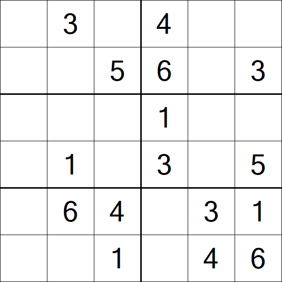

Gym
This Section is still being developed!

Hobby 2
This section is still being developed!
Hobby 3
This section is still being developed!
Hi I'm Adam, a Computer Science graduate from the University of Exeter and am actively seeking software engineering roles that offer opportunities for growth and career development. I've always had a keen interest in Computer Science from a young age. This all stemmed from my interest of building and tinkering with Computers from the age of 13. I began studying Computer Science in Frome College, and achieved strong A-levels despite the challenging cirumstances brought from the COVID-19 pandemic. This led to me securing a place at the University of Exeter, where I am proud to have achieved a First-Class honours in Computer Science. I am intersted in securing a role in an innovative, forward thinking company which provides training and development oppurtunities.
When I'm not coding, you can find me engaging in activities that help me unwind and keep my mind sharp. These activities are detailed in the cards below. Alongside this, I have included a link to view my CV below.
Download My CVThis Section is still being developed!
This section is still being developed!
This section is still being developed!